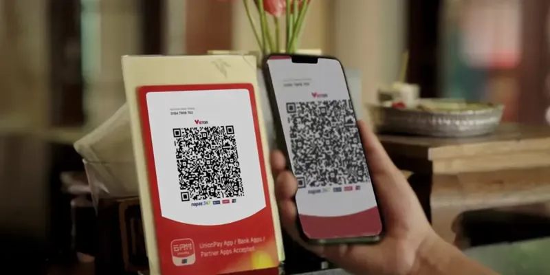

随着越南电子商务、线上娱乐、跨境服务以及数字经济不断发展，越来越多企业开始进入越南市场。对于企业而言，接入支付通道只是完成交易的第一步，如何让用户快速、顺畅、安全地完成付款，才是真正影响业务转化率的关键。很多企业在运营过程中发现，即使已经接入越南本地支付渠道，订单支付成功率依然存在提升空间。其中一个重要原因，就是缺少符合越南用户习惯的本地化收银台系统。一个优秀的越南收银台，不仅是简单的付款页面，而是连接用户、支付渠道以及企业业务系统的重要入口。通过优化支付流程、匹配本地支付习惯、提升支付体验，企业可以有效减少订单流失，提高整体交易效率。
一、什么是越南收银台系统？
越南收银台系统，是指企业向越南用户提供支付操作页面的一套综合支付解决方案。用户在购买商品或服务时，通过收银台完成：查看订单金额、选择支付方式、扫码支付、银行转账、确认付款、获取支付结果，整个过程类似于线下购物中的付款柜台，因此被称为“收银台”。但与传统网页支付页面不同，现代化收银台系统需要具备更强的本地化能力。例如：支持越南用户常用支付方式、自动适配手机端页面、支持越南盾显示、提供快速支付流程、实时返回支付状态。这些功能都会直接影响用户是否完成支付。
二、为什么本地化收银台影响交易成功率？
很多企业进入越南市场时，会直接使用海外支付页面。但是不同国家用户的支付习惯存在明显差异。如果支付流程不符合当地用户习惯，就容易出现用户放弃付款的问题。主要体现在以下几个方面。1. 支付方式是否符合越南用户习惯。越南消费者在日常支付中，更习惯使用：本地银行转账、VietQR二维码支付、银行应用支付、本地电子支付方式、如果收银台只提供国际信用卡支付，很多用户可能无法完成付款。例如：用户购买商品后进入支付页面，如果发现没有自己熟悉的银行支付方式，就可能选择退出。因此，一个优秀的越南收银台系统，需要整合当地常用支付渠道，让用户能够使用熟悉的方法完成交易。2. 页面体验影响用户付款意愿。支付环节通常是用户购买流程中的最后一步。如果页面加载速度慢、操作复杂，容易导致用户流失。例如：传统支付流程：进入支付页面 → 跳转银行页面 → 输入信息 → 返回商户网站 → 等待确认。中间多个步骤容易造成用户放弃。而优化后的本地化收银台可以实现：进入订单页面 → 选择支付方式 → 完成支付 → 自动返回结果减少操作步骤，提高支付完成率。3. 移动端体验非常重要。越南互联网用户中，移动设备占据重要比例。大量消费者习惯通过手机完成购物和付款。因此，越南收银台必须考虑：手机屏幕适配、页面加载速度、按钮操作体验、支付流程简洁性、如果PC端设计良好，但手机端体验较差，同样会影响交易转化。
三、一个成熟的越南收银台系统应该具备哪些功能？
专业支付服务商提供的收银台系统，通常包含多个核心能力。1. 多支付方式聚合。企业无需分别开发不同支付入口。通过统一收银台，可以整合：越南银行卡支付、VietQR二维码支付、本地银行转账、其他本地支付方式 用户可以根据自己的习惯选择付款方式。2. 智能支付路由。不同支付渠道可能存在：网络波动、银行维护、交易限制，智能路由系统可以根据实时情况选择更合适的支付路径。帮助企业提高：支付稳定性、成功率、用户体验。3. 实时支付状态反馈。用户完成支付后，系统需要快速确认结果。优秀收银台支持：秒级订单状态更新、自动回调通知、异常订单查询，帮助企业及时处理业务。例如：电商订单付款成功后，系统自动通知仓库发货。游戏平台充值成功后，自动增加用户余额。4. 数据统计和资金管理。收银台不仅是支付入口，同时也是企业管理交易的重要工具。企业可以通过后台查看：每日交易金额、支付成功率、支付方式分析、订单状态、资金流水、帮助企业优化运营策略。
四、越南收银台与API系统如何结合？
对于中大型企业而言，仅有收银台是不够的企业通常需要将收银台与自身系统连接，实现完整自动化流程。典型流程如下：用户提交订单、企业系统调用支付API、生成越南本地收银台页面、用户选择支付方式、完成付款、支付系统发送回调、企业自动更新订单状态。这种模式可以帮助企业实现：自动收款、自动确认订单、自动数据同步、自动财务统计，大幅提升运营效率。
五、不同行业为什么需要越南本地收银台？
1.电商行业，电商企业每天面对大量订单。收银台需要支持：快速付款、自动确认订单、多支付方式，降低购物车放弃率。2.游戏行业，游戏平台对支付速度要求较高。用户充值过程中，如果支付失败，会直接影响收入。稳定收银台能够提升充值体验。3.数字服务行业。订阅型业务需要长期稳定收款。本地支付方式可以降低用户付款门槛，提高续费率。4.跨境贸易企业。企业需要同时管理：收款、对账、资金结算、完善收银台系统可以帮助企业提高资金管理效率。5.选择越南收银台服务商需要关注什么？企业选择支付合作伙伴时，不应该只关注价格，更应该关注整体服务能力。重点包括：6.支付渠道资源。是否拥有稳定的越南本地支付资源。7.技术能力是否支持：API快速接入 、自动回调、订单查询、数据管理。8.系统稳定性。支付系统需要长期运行。企业应该关注：系统响应速度、故障处理能力、技术支持效率
六、未来越南收银台的发展方向
未来，越南支付市场将更加智能化。收银台系统的发展趋势包括：更强的移动支付体验，适应消费者手机支付习惯。更多支付方式融合，支持更多本地支付场景。更智能的数据分析，帮助企业优化：用户行为、支付转化率、风险控制。更完善的资金管理，从单纯支付工具升级为企业综合金融基础设施。
结语
在越南市场竞争越来越激烈的情况下，支付体验已经成为企业提升竞争力的重要因素。一个符合当地用户习惯的越南收银台系统，不仅能够帮助企业提高支付成功率，还能够改善用户体验，降低交易流失。通过结合越南本地收款通道、支付API接口、智能订单管理以及资金管理系统，企业可以建立更加稳定、高效的越南支付解决方案。对于希望长期发展越南市场的企业而言，本地化收银台将成为连接消费者与商业服务的重要桥梁。